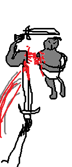
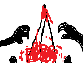

Vous récupérez la potion dans son sac et vous lui faites boire.
Vous voyez toutes ces plaies partir et elle commence à reprendre conscience.
Elle vous voit couvert de sang et avec un sourir de meurtrier.
Son visage se fige, elle a compris.
Avant qu'elle fasse un mouvement, vous lui ôtez la vie. Elle fait tomber les dernières larmes de son corps avant de mourir en silence.
Vous n'êtes pas satisfait par sa réaction. Aucun cri rien. Pour résoudre ça
Vous allez à grande vitesse vers le village pour vous changer les idées.
Cette fois-ci les monstres vous attaquent avec hésitation.
Mais cette hésitation vous permet de les achever en vous jetant sur leur gorge et les arracher avec vos dents.
Arrivé au village les gardes vous voient et dégaine leur épée.
Vous partez en faux rire.
"HAHAHAHAH, alors cette fois-ci vous dégainez quand je suis recouvert de sang!!!"
Certains gardes sont pétrifiés de peur et le peu qui vous attaquent n'ont aucune chance, vous arrivez facilement à les désarmer en leur tranchant leur bras qui tient leur épée.

Une fois que les gardes les plus courageux ont perdu leurs bras vous tuez ce qui se pisse dessus devant eux.Ils sont fous de rage mais pas longtemps car une fois fini vous les achevez.
Vous prenez assaut la ville.
Vous tuez tout ce qui bouge dans la ville.
Vous riez à grands poumons avec votre main sur votre front et en contemplant votre art.

Soudain vous entendez une voix venue de nulle part mais douce.
"Tu as tué beaucoup de monde aujourd'hui, mais rappelle-toi de pourquoi nous t'avons choisi."
Une immense épée vous transperce tout votre cartilage

Vous crachez tout votre sang et avant de mourir vous entendez.
"C'est dur mais ne laisse pas la folie t'emporter"
Vous vous écoulez par terre et mourez.